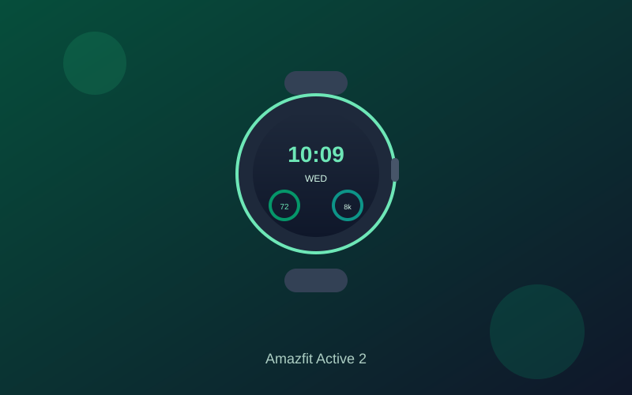

Amazfit Active 2 Review: Bright AMOLED and Long Battery Under $150
The Amazfit Active 2 delivers a premium-looking round design, crisp AMOLED screen, multi-day battery, and capable GPS tracking at a price that regularly sits well under $130.
Round smartwatches that look polished and last more than a couple of days used to sit firmly above $200. The Amazfit Active 2 changes that equation. Street pricing often lands between $80 and $130 depending on the Sport or Premium version, keeping it comfortably inside the under-$150 budget while offering a stainless-steel case and bright display that feel more expensive than the sticker.
The 1.32-inch AMOLED screen is one of the clearer strengths. Peak brightness around 2,000 nits keeps the face readable outdoors, and the round layout makes it easy to glance at time, heart rate, and workout data without hunting through menus. Navigation is responsive enough for daily use, and the overall design sits cleanly on the wrist for both casual wear and training.
Battery life is another practical highlight. Amazfit rates it around 10 days of typical use; real-world mixed testing commonly returns closer to 7–9 days depending on GPS sessions and always-on settings. That is still a clear improvement over many full smartwatches that demand a nightly charge, and it pairs well with continuous heart-rate and sleep tracking.
Fitness tools cover the bases most people need: heart rate, SpO2, stress, sleep staging, and a wide range of sport modes with built-in GPS. Offline maps and turn-by-turn guidance let you leave the phone behind on runs or walks. Bluetooth notifications and calling work through the Zepp app on both Android and iOS. The software is fitness-focused rather than a full app-store experience, which keeps things lightweight but limits deeper customization.
For anyone who wants a stylish daily tracker that prioritizes battery, outdoor visibility, and reliable basic metrics over Wear OS apps or payments, the Active 2 is one of the stronger values under $150. It is not a premium-flagship replacement, but it does not need to be—it simply delivers consistent, low-friction tracking at a price that is easy to justify.
Key Takeaways
- Price Range: ~$80 – $130 (Amazon, Sport or Premium)
- Display: 1.32-inch bright AMOLED, up to ~2,000 nits
- Battery: ~7–10 days typical use
- Features: Built-in GPS, offline maps, heart rate/SpO2/sleep tracking, multiple sport modes, 5ATM water resistance